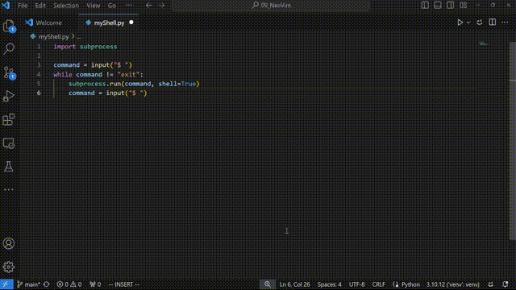
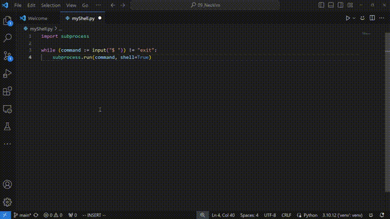

import time
def mega_transform(x):
time.sleep(0.9)
sign = 1 if x % 2 == 0 else -1
return sign * x ** 2Introduction: The Evolution of Decision-Making in Python
One of the world’s most widely-used programming languages is undoubtedly Python. Created by Guido van Rossum in 1991, Python’s inevitable growth necessitated a robust framework for governance to manage its expanding ecosystem.
Initially, Python’s governance was straightforward. Guido van Rossum served as the Benevolent Dictator For Life (BDFL), a title that conferred both ultimate authority and the expectation of benevolence in decision-making. This model allowed for swift, unilateral decisions, essential during the nascent stages of Python’s development. However, as the language gained traction and its user base expanded, the limitations of a single-point decision-maker became evident.
In response to the growing complexity, the Python Enhancement Proposal (PEP) system was instituted. PEPs function as formalized proposals for changes to Python, analogous to legislative amendments in political systems. Each PEP undergoes a rigorous process of drafting, review, and acceptance. This system democratized the decision-making process, allowing for community input and expert evaluation.
Guido van Rossum appointed BDFL Delegates who are entrusted with decision-making power in specific areas, thus decentralizing authority while maintaining overall coherence in the language’s evolution.
On October 14, 2019, Python 3.8 introduced the assignment expression or the walrus operator (:=) via PEP 572, allowing in-line assignment within expressions to enhance code efficiency and readability. Despite its benefits, the operator sparked significant controversy, highlighting the intrinsic tension between innovation and stability in programming language development. This debate led to Guido van Rossum’s resignation as BDFL, illustrating the personal toll of leadership and prompting a reevaluation of Python’s governance structure to create more sustainable, distributed decision-making models.
Understanding the Walrus Operator
The walrus operator is a syntactic innovation that allows for assignment expressions. This operator can streamline code by reducing redundancy and improving readability, particularly when dealing with computationally expensive operations. To elucidate its utility, let us examine various examples.
Imagine you have a value you want to use multiple times in a single line of code. Normally, you would have to do this in two steps:
x = compute_value() # Step 1: Assign the value to a variable
if x > 10: # Step 2: Use the variable in an expression
print(x)In the first line of code, we are performing an assignment operation. The function compute_value() is called, and it executes its defined task, which could involve computationally expensive calculations, data processing, or fetching information. The result of this function call is then stored in a variable named x.
- Function Call:
compute_value()is invoked, and it produces an output based on its implementation. - Assignment: The
=symbol assigns the output ofcompute_value()to the variablex.
This step is fundamental because it captures and stores the result of the function, making it available for future use within the program. By assigning this value to x, we ensure that we can reference and utilize the computed result in subsequent code.
In the second line, we evaluate a conditional expression and perform an action based on the result.
- The
ifstatementif x > 10 : print(x)checks if the expression is true then prints the value ofx
Notice how any time either of the words assignment or expression is used, I italicized it. The assignment expression (or walrus operator because the symbol := looks like the teeth of a walrus lying down) performs the two operations of assignment and expresssion in one go. The Code above can be shortened to:
if (x := compute_value()) > 10: # Assign the value to a variable and use it in an expression
print(x)x := compute_value(): This part does two things at once. It calls thecompute_value()function and assigns its result to the variablex.if (x := compute_value()) > 10:: This is anifstatement that checks if the result ofcompute_value()(which is now stored inx) is greater than 10. If it is, it executes the code inside theifblock (in this case,print(x)).
This has made our code shorter by reducing the need to write the same expression twice and also kept related logic in one place, making the code hopefully easier to understand at a glance. in a nutshell, the walrus operator (:=) allows us to assign values within expressions, making our code shorter and often easier to read. It’s especially useful when we need to use the result of an expression multiple times in a single line of code.
Reducing Redundancy in Code
Consider the scenario where we process sensor data and filter out invalid entries. Using traditional methods, the code appears verbose:
valid_data = []
for value in sensor_data:
result = compute_expensive_value(value)
if result is not None:Whenever you have a block of code that has an empty list sitting above a for loop, it usually implies that a list comprehension could be employed to do the exact same thing.
valid_data = [compute_expensive_value(value) for value in sensor_data
if compute_expensive_value(value) is not None]
# Compute statistics on valid_data
average = sum(valid_data) / len(valid_data)This is a lot cleaner than the previous one; however, it is also quite inefficient. We can see that we are calling the computationally expensive function twice instead of once.
With the walrus operator, we can condense this logic into a more efficient list comprehension:
valid_data = [result for value in sensor_data if (result := compute_exdataing regular expressions.Example: Handling Regular Expressions
A common pattern involves checking for matches and then acting upon them:
match = pattern.search(data)
if match is not None:
# Do something with matchThe walrus operator allows us to streamline this operation:
if (match := pattern.search(data)) is not None:
# Do something with matchThis approach reduces the scope of the match variable, enhancing code readability and maintainability.
Computational Efficiency: A Case Study
Let us define a computationally expensive function called mega_transform that serves to illustrate the efficiency gains provided by the walrus operator:
Given a list of numbers, we can measure the time taken to filter and transform these numbers without using the walrus operator:
nu_list = list(range(1, 20))
start = time.perf_counter()
result = [mega_transform(x) for x in nu_list if mega_transform(x) > 0]
end = time.perf_counter()
print(result)
print(f"total time: {end - start:.2f} secs")[4, 16, 36, 64, 100, 144, 196, 256, 324]
total time: 25.35 secsWe repeat the process using the walrus operator to demonstrate its efficiency:
start = time.perf_counter()
result = [result for x in nu_list if (result := mega_transform(x)) > 0]
end = time.perf_counter()
print(result)
print(f"total time: {end - start:.2f} secs")[4, 16, 36, 64, 100, 144, 196, 256, 324]
total time: 17.19 secsThe results clearly indicate that the walrus operator reduces the computational overhead by avoiding redundant function calls.
Try this yourself
You can try this in your IDE like vscode, sublime or whatever you find fun:
You are to create a simple command-line interface in Python that allows you to execute shell commands until the user types “exit”.
import subprocess
command = input("$ ")
while command != "exit":
subprocess.run(command, shell=True)
command = input("$ ")
import subprocess
while (command := input("$ ")) != "exit":
subprocess.run(command, shell=True)
Conclusion
In conclusion, the walrus operator is a powerful tool for optimizing Python code, particularly in scenarios involving computationally expensive operations. By allowing in-line assignments, it reduces redundancy, improves readability, and enhances overall efficiency. For developers dealing with complex data processing tasks, the walrus operator is a valuable addition to Python’s rich set of features.
These examples are but a few instances demonstrating the utility of the walrus operator. For further exploration and practical use-cases, the references below provide additional insights.